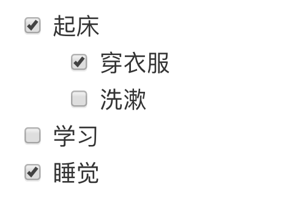

<!DOCTYPE HTML>
<html lang="" >
    <head>
        <meta charset="UTF-8">
        <meta content="text/html; charset=utf-8" http-equiv="Content-Type">
        <title>Markdown · GitBook</title>
        <meta http-equiv="X-UA-Compatible" content="IE=edge" />
        <meta name="description" content="">
        <meta name="generator" content="GitBook 3.2.3">
        
        
        
    
    <link rel="stylesheet" href="../gitbook/style.css">

    
            
                
                <link rel="stylesheet" href="../gitbook/gitbook-plugin-highlight/website.css">
                
            
                
                <link rel="stylesheet" href="../gitbook/gitbook-plugin-search/search.css">
                
            
                
                <link rel="stylesheet" href="../gitbook/gitbook-plugin-fontsettings/website.css">
                
            
        

    

    
        
    
        
    
        
    
        
    
        
    
        
    

        
    
    
    <meta name="HandheldFriendly" content="true"/>
    <meta name="viewport" content="width=device-width, initial-scale=1, user-scalable=no">
    <meta name="apple-mobile-web-app-capable" content="yes">
    <meta name="apple-mobile-web-app-status-bar-style" content="black">
    <link rel="apple-touch-icon-precomposed" sizes="152x152" href="../gitbook/images/apple-touch-icon-precomposed-152.png">
    <link rel="shortcut icon" href="../gitbook/images/favicon.ico" type="image/x-icon">

    
    <link rel="next" href="program.html" />
    
    
    <link rel="prev" href="gitbook/more.html" />
    

    </head>
    <body>
        
<div class="book">
    <div class="book-summary">
        
            
<div id="book-search-input" role="search">
    <input type="text" placeholder="Type to search" />
</div>

            
                <nav role="navigation">
                


<ul class="summary">
    
    

    

    
        
        
    
        <li class="chapter " data-level="1.1" data-path="../">
            
                <a href="../">
            
                    
                    说明
            
                </a>
            

            
        </li>
    
        <li class="chapter " data-level="1.2" data-path="../SUMMARY.html">
            
                <a href="../SUMMARY.html">
            
                    
                    目录
            
                </a>
            

            
        </li>
    

    
        
        <li class="divider"></li>
        
        
    
        <li class="chapter " data-level="2.1" data-path="../aliyun/">
            
                <a href="../aliyun/">
            
                    
                    阿里云使用总结
            
                </a>
            

            
            <ul class="articles">
                
    
        <li class="chapter " data-level="2.1.1" data-path="../aliyun/maxcompute.html">
            
                <a href="../aliyun/maxcompute.html">
            
                    
                    大数据计算服务 maxcompute
            
                </a>
            

            
        </li>
    
        <li class="chapter " data-level="2.1.2" data-path="../aliyun/pai.html">
            
                <a href="../aliyun/pai.html">
            
                    
                    机器学习 PAI
            
                </a>
            

            
        </li>
    

            </ul>
            
        </li>
    
        <li class="chapter " data-level="2.2" data-path="../db/">
            
                <a href="../db/">
            
                    
                    数据库 DB
            
                </a>
            

            
            <ul class="articles">
                
    
        <li class="chapter " data-level="2.2.1" data-path="../db/mysql/">
            
                <a href="../db/mysql/">
            
                    
                    MySQL
            
                </a>
            

            
            <ul class="articles">
                
    
        <li class="chapter " data-level="2.2.1.1" data-path="../db/mysql/curd.html">
            
                <a href="../db/mysql/curd.html">
            
                    
                    增删改查
            
                </a>
            

            
        </li>
    
        <li class="chapter " data-level="2.2.1.2" data-path="../db/mysql/func/">
            
                <a href="../db/mysql/func/">
            
                    
                    函数
            
                </a>
            

            
            <ul class="articles">
                
    
        <li class="chapter " data-level="2.2.1.2.1" data-path="../db/mysql/func/date_time.html">
            
                <a href="../db/mysql/func/date_time.html">
            
                    
                    日期和时间
            
                </a>
            

            
        </li>
    

            </ul>
            
        </li>
    
        <li class="chapter " data-level="2.2.1.3" data-path="../db/mysql/mysql.html">
            
                <a href="../db/mysql/mysql.html">
            
                    
                    原理
            
                </a>
            

            
        </li>
    

            </ul>
            
        </li>
    
        <li class="chapter " data-level="2.2.2" data-path="../db/redis.html">
            
                <a href="../db/redis.html">
            
                    
                    Redis
            
                </a>
            

            
        </li>
    

            </ul>
            
        </li>
    
        <li class="chapter " data-level="2.3" data-path="../english.html">
            
                <a href="../english.html">
            
                    
                    英文
            
                </a>
            

            
        </li>
    
        <li class="chapter " data-level="2.4" data-path="../learn/">
            
                <a href="../learn/">
            
                    
                    感悟
            
                </a>
            

            
            <ul class="articles">
                
    
        <li class="chapter " data-level="2.4.1" data-path="../learn/week14.html">
            
                <a href="../learn/week14.html">
            
                    
                    14周 4.1-4.7
            
                </a>
            

            
        </li>
    
        <li class="chapter " data-level="2.4.2" data-path="../learn/week15.html">
            
                <a href="../learn/week15.html">
            
                    
                    15周 4.8-4.14
            
                </a>
            

            
        </li>
    
        <li class="chapter " data-level="2.4.3" data-path="../learn/week16.html">
            
                <a href="../learn/week16.html">
            
                    
                    16周 4.15-4.21
            
                </a>
            

            
        </li>
    

            </ul>
            
        </li>
    
        <li class="chapter " data-level="2.5" data-path="../math/">
            
                <a href="../math/">
            
                    
                    数学
            
                </a>
            

            
            <ul class="articles">
                
    
        <li class="chapter " data-level="2.5.1" data-path="../math/arima.html">
            
                <a href="../math/arima.html">
            
                    
                    ARIMA 模型
            
                </a>
            

            
        </li>
    
        <li class="chapter " data-level="2.5.2" data-path="../math/probability.html">
            
                <a href="../math/probability.html">
            
                    
                    概率论
            
                </a>
            

            
        </li>
    

            </ul>
            
        </li>
    
        <li class="chapter " data-level="2.6" data-path="../ml/">
            
                <a href="../ml/">
            
                    
                    机器学习
            
                </a>
            

            
        </li>
    
        <li class="chapter " data-level="2.7" data-path="../network/">
            
                <a href="../network/">
            
                    
                    network
            
                </a>
            

            
            <ul class="articles">
                
    
        <li class="chapter " data-level="2.7.1" data-path="../network/ftp_ssh_scp.html">
            
                <a href="../network/ftp_ssh_scp.html">
            
                    
                    ftp ssh scp
            
                </a>
            

            
        </li>
    
        <li class="chapter " data-level="2.7.2" data-path="../network/netbase.html">
            
                <a href="../network/netbase.html">
            
                    
                    基础概念
            
                </a>
            

            
        </li>
    
        <li class="chapter " data-level="2.7.3" data-path="../network/network.html">
            
                <a href="../network/network.html">
            
                    
                    网络
            
                </a>
            

            
        </li>
    

            </ul>
            
        </li>
    
        <li class="chapter " data-level="2.8" data-path="../os/">
            
                <a href="../os/">
            
                    
                    操作系统
            
                </a>
            

            
            <ul class="articles">
                
    
        <li class="chapter " data-level="2.8.1" data-path="../os/linux.html">
            
                <a href="../os/linux.html">
            
                    
                    Linux
            
                </a>
            

            
        </li>
    
        <li class="chapter " data-level="2.8.2" data-path="../os/macos.html">
            
                <a href="../os/macos.html">
            
                    
                    macOS
            
                </a>
            

            
        </li>
    
        <li class="chapter " data-level="2.8.3" data-path="../os/windows.html">
            
                <a href="../os/windows.html">
            
                    
                    Windows
            
                </a>
            

            
        </li>
    

            </ul>
            
        </li>
    
        <li class="chapter " data-level="2.9" data-path="../physics/">
            
                <a href="../physics/">
            
                    
                    物理
            
                </a>
            

            
            <ul class="articles">
                
    
        <li class="chapter " data-level="2.9.1" data-path="../physics/mooc_stanford.html">
            
                <a href="../physics/mooc_stanford.html">
            
                    
                    幕课 斯坦福大学
            
                </a>
            

            
        </li>
    

            </ul>
            
        </li>
    
        <li class="chapter " data-level="2.10" data-path="../python/">
            
                <a href="../python/">
            
                    
                    Python
            
                </a>
            

            
            <ul class="articles">
                
    
        <li class="chapter " data-level="2.10.1" data-path="../python/class.html">
            
                <a href="../python/class.html">
            
                    
                    类与对象
            
                </a>
            

            
        </li>
    
        <li class="chapter " data-level="2.10.2" data-path="../python/compress_text.html">
            
                <a href="../python/compress_text.html">
            
                    
                    压缩字符串
            
                </a>
            

            
        </li>
    
        <li class="chapter " data-level="2.10.3" data-path="../python/convert_path.html">
            
                <a href="../python/convert_path.html">
            
                    
                    转换路径
            
                </a>
            

            
        </li>
    
        <li class="chapter " data-level="2.10.4" data-path="../python/django/">
            
                <a href="../python/django/">
            
                    
                    Django
            
                </a>
            

            
            <ul class="articles">
                
    
        <li class="chapter " data-level="2.10.4.1" data-path="../python/django/admin.html">
            
                <a href="../python/django/admin.html">
            
                    
                    admin 站点
            
                </a>
            

            
        </li>
    
        <li class="chapter " data-level="2.10.4.2" data-path="../python/django/orm_def.html">
            
                <a href="../python/django/orm_def.html">
            
                    
                    ORM 定义
            
                </a>
            

            
        </li>
    
        <li class="chapter " data-level="2.10.4.3" data-path="../python/django/orm_query.html">
            
                <a href="../python/django/orm_query.html">
            
                    
                    ORM 查询
            
                </a>
            

            
        </li>
    

            </ul>
            
        </li>
    
        <li class="chapter " data-level="2.10.5" data-path="../python/library/">
            
                <a href="../python/library/">
            
                    
                    库
            
                </a>
            

            
            <ul class="articles">
                
    
        <li class="chapter " data-level="2.10.5.1" data-path="../python/library/celery.html">
            
                <a href="../python/library/celery.html">
            
                    
                    celery
            
                </a>
            

            
        </li>
    
        <li class="chapter " data-level="2.10.5.2" data-path="../python/library/flake8.html">
            
                <a href="../python/library/flake8.html">
            
                    
                    flake8
            
                </a>
            

            
        </li>
    
        <li class="chapter " data-level="2.10.5.3" data-path="../python/library/kuozhanbao.html">
            
                <a href="../python/library/kuozhanbao.html">
            
                    
                    line_profiler
            
                </a>
            

            
        </li>
    
        <li class="chapter " data-level="2.10.5.4" data-path="../python/library/lxml.html">
            
                <a href="../python/library/lxml.html">
            
                    
                    lxml
            
                </a>
            

            
        </li>
    
        <li class="chapter " data-level="2.10.5.5" data-path="../python/library/matplotlib/">
            
                <a href="../python/library/matplotlib/">
            
                    
                    Matplotlib
            
                </a>
            

            
            <ul class="articles">
                
    
        <li class="chapter " data-level="2.10.5.5.1" data-path="../python/library/matplotlib/plt3D.html">
            
                <a href="../python/library/matplotlib/plt3D.html">
            
                    
                    简单的三维图像
            
                </a>
            

            
        </li>
    

            </ul>
            
        </li>
    
        <li class="chapter " data-level="2.10.5.6" data-path="../python/library/pillow.html">
            
                <a href="../python/library/pillow.html">
            
                    
                    Pillow
            
                </a>
            

            
        </li>
    
        <li class="chapter " data-level="2.10.5.7" data-path="../python/library/re.html">
            
                <a href="../python/library/re.html">
            
                    
                    re
            
                </a>
            

            
        </li>
    
        <li class="chapter " data-level="2.10.5.8" data-path="../python/library/requests.html">
            
                <a href="../python/library/requests.html">
            
                    
                    requests
            
                </a>
            

            
        </li>
    
        <li class="chapter " data-level="2.10.5.9" data-path="../python/library/supervisor.html">
            
                <a href="../python/library/supervisor.html">
            
                    
                    Supervisor
            
                </a>
            

            
        </li>
    

            </ul>
            
        </li>
    
        <li class="chapter " data-level="2.10.6" data-path="../python/op_summary.html">
            
                <a href="../python/op_summary.html">
            
                    
                    操作汇总
            
                </a>
            

            
        </li>
    
        <li class="chapter " data-level="2.10.7" data-path="../python/python_crash_course.html">
            
                <a href="../python/python_crash_course.html">
            
                    
                    Python编程从入门到实践
            
                </a>
            

            
        </li>
    
        <li class="chapter " data-level="2.10.8" data-path="../python/shortest_line.html">
            
                <a href="../python/shortest_line.html">
            
                    
                    平面上的多个点的最短连接
            
                </a>
            

            
        </li>
    
        <li class="chapter " data-level="2.10.9" data-path="../python/standard_library/">
            
                <a href="../python/standard_library/">
            
                    
                    标准库
            
                </a>
            

            
            <ul class="articles">
                
    
        <li class="chapter " data-level="2.10.9.1" data-path="../python/standard_library/abc.html">
            
                <a href="../python/standard_library/abc.html">
            
                    
                    abc
            
                </a>
            

            
        </li>
    
        <li class="chapter " data-level="2.10.9.2" data-path="../python/standard_library/multiprocessing.html">
            
                <a href="../python/standard_library/multiprocessing.html">
            
                    
                    multiprocessing
            
                </a>
            

            
        </li>
    
        <li class="chapter " data-level="2.10.9.3" data-path="../python/standard_library/os.html">
            
                <a href="../python/standard_library/os.html">
            
                    
                    os
            
                </a>
            

            
        </li>
    
        <li class="chapter " data-level="2.10.9.4" data-path="../python/standard_library/socket.html">
            
                <a href="../python/standard_library/socket.html">
            
                    
                    socket
            
                </a>
            

            
        </li>
    
        <li class="chapter " data-level="2.10.9.5" data-path="../python/standard_library/string.html">
            
                <a href="../python/standard_library/string.html">
            
                    
                    string
            
                </a>
            

            
        </li>
    
        <li class="chapter " data-level="2.10.9.6" data-path="../python/standard_library/threading.html">
            
                <a href="../python/standard_library/threading.html">
            
                    
                    threading
            
                </a>
            

            
        </li>
    

            </ul>
            
        </li>
    
        <li class="chapter " data-level="2.10.10" data-path="../python/thread_limit_func_time.html">
            
                <a href="../python/thread_limit_func_time.html">
            
                    
                    限制函数执行时间的装饰器
            
                </a>
            

            
        </li>
    
        <li class="chapter " data-level="2.10.11" data-path="../python/tools/">
            
                <a href="../python/tools/">
            
                    
                    工具
            
                </a>
            

            
            <ul class="articles">
                
    
        <li class="chapter " data-level="2.10.11.1" data-path="../python/tools/anaconda.html">
            
                <a href="../python/tools/anaconda.html">
            
                    
                    Anaconda
            
                </a>
            

            
        </li>
    
        <li class="chapter " data-level="2.10.11.2" data-path="../python/tools/ipython.html">
            
                <a href="../python/tools/ipython.html">
            
                    
                    ipython
            
                </a>
            

            
        </li>
    
        <li class="chapter " data-level="2.10.11.3" data-path="../python/tools/jupyter.html">
            
                <a href="../python/tools/jupyter.html">
            
                    
                    Jupyter Notebook
            
                </a>
            

            
        </li>
    
        <li class="chapter " data-level="2.10.11.4" data-path="../python/tools/pip.html">
            
                <a href="../python/tools/pip.html">
            
                    
                    PIP
            
                </a>
            

            
        </li>
    
        <li class="chapter " data-level="2.10.11.5" data-path="../python/tools/pycharm.html">
            
                <a href="../python/tools/pycharm.html">
            
                    
                    Pycharm
            
                </a>
            

            
        </li>
    

            </ul>
            
        </li>
    
        <li class="chapter " data-level="2.10.12" data-path="../python/typein.html">
            
                <a href="../python/typein.html">
            
                    
                    数据类型
            
                </a>
            

            
        </li>
    
        <li class="chapter " data-level="2.10.13" data-path="../python/ugly_number.html">
            
                <a href="../python/ugly_number.html">
            
                    
                    丑数
            
                </a>
            

            
        </li>
    
        <li class="chapter " data-level="2.10.14" data-path="../python/warn.html">
            
                <a href="../python/warn.html">
            
                    
                    注意
            
                </a>
            

            
        </li>
    

            </ul>
            
        </li>
    
        <li class="chapter " data-level="2.11" data-path="../resource.html">
            
                <a href="../resource.html">
            
                    
                    资源汇总
            
                </a>
            

            
        </li>
    
        <li class="chapter " data-level="2.12" data-path="../todo/">
            
                <a href="../todo/">
            
                    
                    TODO
            
                </a>
            

            
            <ul class="articles">
                
    
        <li class="chapter " data-level="2.12.1" data-path="../todo/movie.html">
            
                <a href="../todo/movie.html">
            
                    
                    电影
            
                </a>
            

            
        </li>
    
        <li class="chapter " data-level="2.12.2" data-path="../todo/read.html">
            
                <a href="../todo/read.html">
            
                    
                    阅读
            
                </a>
            

            
        </li>
    

            </ul>
            
        </li>
    
        <li class="chapter " data-level="2.13" data-path="./">
            
                <a href="./">
            
                    
                    工具
            
                </a>
            

            
            <ul class="articles">
                
    
        <li class="chapter " data-level="2.13.1" data-path="confluence.html">
            
                <a href="confluence.html">
            
                    
                    confluence(wiki)
            
                </a>
            

            
        </li>
    
        <li class="chapter " data-level="2.13.2" data-path="git.html">
            
                <a href="git.html">
            
                    
                    GIT
            
                </a>
            

            
        </li>
    
        <li class="chapter " data-level="2.13.3" data-path="gitbook/">
            
                <a href="gitbook/">
            
                    
                    GitBook
            
                </a>
            

            
            <ul class="articles">
                
    
        <li class="chapter " data-level="2.13.3.1" data-path="gitbook/install.html">
            
                <a href="gitbook/install.html">
            
                    
                    安装与使用
            
                </a>
            

            
        </li>
    
        <li class="chapter " data-level="2.13.3.2" data-path="gitbook/more.html">
            
                <a href="gitbook/more.html">
            
                    
                    相关
            
                </a>
            

            
        </li>
    

            </ul>
            
        </li>
    
        <li class="chapter active" data-level="2.13.4" data-path="markdwon.html">
            
                <a href="markdwon.html">
            
                    
                    Markdown
            
                </a>
            

            
        </li>
    
        <li class="chapter " data-level="2.13.5" data-path="program.html">
            
                <a href="program.html">
            
                    
                    编程
            
                </a>
            

            
        </li>
    
        <li class="chapter " data-level="2.13.6" data-path="ssh.html">
            
                <a href="ssh.html">
            
                    
                    SSH
            
                </a>
            

            
        </li>
    
        <li class="chapter " data-level="2.13.7" data-path="vim.html">
            
                <a href="vim.html">
            
                    
                    VIM
            
                </a>
            

            
        </li>
    
        <li class="chapter " data-level="2.13.8" data-path="vscode.html">
            
                <a href="vscode.html">
            
                    
                    VS Code
            
                </a>
            

            
        </li>
    

            </ul>
            
        </li>
    
        <li class="chapter " data-level="2.14" data-path="../work/">
            
                <a href="../work/">
            
                    
                    work
            
                </a>
            

            
            <ul class="articles">
                
    
        <li class="chapter " data-level="2.14.1" data-path="../work/crm_pc.html">
            
                <a href="../work/crm_pc.html">
            
                    
                    前端启动
            
                </a>
            

            
        </li>
    
        <li class="chapter " data-level="2.14.2" data-path="../work/node_npm.html">
            
                <a href="../work/node_npm.html">
            
                    
                    Mac 安装 node、npm
            
                </a>
            

            
        </li>
    

            </ul>
            
        </li>
    

    

    <li class="divider"></li>

    <li>
        <a href="https://www.gitbook.com" target="blank" class="gitbook-link">
            Published with GitBook
        </a>
    </li>
</ul>


                </nav>
            
        
    </div>

    <div class="book-body">
        
            <div class="body-inner">
                
                    

<div class="book-header" role="navigation">
    

    <!-- Title -->
    <h1>
        <i class="fa fa-circle-o-notch fa-spin"></i>
        <a href=".." >Markdown</a>
    </h1>
</div>


                    <div class="page-wrapper" tabindex="-1" role="main">
                        <div class="page-inner">
                            
<div id="book-search-results">
    <div class="search-noresults">
    
                                <section class="normal markdown-section">
                                
                                <h1 id="markdown">Markdown</h1>
<p></p>
<p>Markdown &#x662F;&#x4E00;&#x79CD;&#x8F7B;&#x91CF;&#x7EA7;&#x6807;&#x8BB0;&#x8BED;&#x8A00;&#xFF0C;&#x521B;&#x59CB;&#x4EBA;&#x4E3A;&#x7EA6;&#x7FF0;&#xB7;&#x683C;&#x9C81;&#x4F2F;&#xFF08;John Gruber&#xFF09;&#x3002;&#x5B83;&#x5141;&#x8BB8;&#x4EBA;&#x4EEC;&#x201C;&#x4F7F;&#x7528;&#x6613;&#x8BFB;&#x6613;&#x5199;&#x7684;&#x7EAF;&#x6587;&#x672C;&#x683C;&#x5F0F;&#x7F16;&#x5199;&#x6587;&#x6863;&#xFF0C;&#x7136;&#x540E;&#x8F6C;&#x6362;&#x6210;&#x6709;&#x6548;&#x7684;XHTML&#xFF08;&#x6216;&#x8005;HTML&#xFF09;&#x6587;&#x6863;&#x201D;&#x3002;Markdown &#x6587;&#x6863;&#x7684;&#x540E;&#x7F00;&#x4E3A; .md&#x3002;</p>
<p>&#x5176;&#x5B9E; Markdwon &#x5C31;&#x662F;&#x6307;&#x4E00;&#x79CD;&#x683C;&#x5F0F;&#x3001;&#x4E00;&#x79CD;&#x6807;&#x8BB0;&#xFF0C;&#x4F7F;&#x7528;&#x8FD9;&#x79CD;&#x683C;&#x5F0F;&#x6765;&#x7F16;&#x5199;&#x7EAF;&#x6587;&#x672C;&#x6587;&#x6863;&#xFF0C;&#x901A;&#x8FC7;&#x5DE5;&#x5177;&#x53EF;&#x4EE5;&#x8F7B;&#x677E;&#x7684;&#x5F97;&#x5230;&#x60F3;&#x8981;&#x7684;&#x6837;&#x5F0F;&#x3002;&#x73B0;&#x5728;&#x8FD9;&#x4E2A;&#x7B14;&#x8BB0;&#x5C31;&#x662F;&#x901A;&#x8FC7;&#x7F16;&#x5199; Markdown &#x6587;&#x6863;&#x518D;&#x914D;&#x5408; gitbook &#x5448;&#x73B0;&#x51FA;&#x6765;&#x7684;&#x3002;</p>
<p>&#x5355;&#x7EAF;&#x7684;&#x4E00;&#x4E2A; Markdown &#x6587;&#x6863;&#x91CC;&#x9762;&#x53EA;&#x662F;&#x5305;&#x542B;&#x683C;&#x5F0F;&#x6807;&#x8BB0;&#x7684;&#x6587;&#x5B57;&#x800C;&#x5DF2;&#xFF0C;&#x5B83;&#x5FC5;&#x987B;&#x548C;&#x4E00;&#x4E2A;&#x5DE5;&#x5177;&#x76F8;&#x914D;&#x5408;&#x624D;&#x80FD;&#x5C55;&#x73B0;&#x5176;&#x529B;&#x91CF;&#x3002;&#x73B0;&#x5728;&#x5F88;&#x591A;&#x7684;&#x7B14;&#x8BB0;&#x8F6F;&#x4EF6;&#xFF08;&#x5982;&#x5370;&#x8C61;&#x3001;&#x6709;&#x9053;&#x4E91;&#xFF09;&#x3001;&#x535A;&#x5BA2;&#x7F51;&#x7AD9;&#xFF08;&#x5982;CSDN&#x3001;&#x7B80;&#x4E66;&#xFF09;&#x3001;&#x4EE3;&#x7801;/&#x6587;&#x672C;&#x7F16;&#x8F91;&#x5668;&#xFF08;Pycharm&#x3001;VS Code&#x3001;Sublime&#xFF09;&#x90FD;&#x76F4;&#x63A5;&#x652F;&#x6301;&#x6216;&#x6709;&#x63D2;&#x4EF6;&#x652F;&#x6301;&#x7F16;&#x5199;&#x3001;&#x9884;&#x89C8;&#x53CA;&#x5BFC;&#x51FA; Markdown &#x683C;&#x5F0F;&#x6587;&#x6863;&#x3002;&#x751A;&#x81F3;&#x6709;&#x4E00;&#x4E9B;&#x6587;&#x672C;&#x7F16;&#x8F91;&#x5668;&#x662F;&#x4E13;&#x95E8;&#x7528;&#x6765;&#x7F16;&#x5199; Markdown &#x6587;&#x6863;&#x7684;&#x3002;</p>
<h2 id="1-&#x51C6;&#x5907;&#x4E00;&#x4E2A;&#x652F;&#x6301;-markdown-&#x7684;&#x7F16;&#x8F91;&#x5668;">1. &#x51C6;&#x5907;&#x4E00;&#x4E2A;&#x652F;&#x6301; Markdown &#x7684;&#x7F16;&#x8F91;&#x5668;</h2>
<p>&#x4F7F;&#x7528;&#x4EFB;&#x4F55;&#x652F;&#x6301; Markdown &#x7684;&#x5DE5;&#x5177;&#x90FD;&#x53EF;&#x4EE5;&#xFF0C;&#x4ED6;&#x4EEC;&#x9876;&#x591A;&#x6709;&#x7EC6;&#x5FAE;&#x7684;&#x5DEE;&#x522B;&#x3002;&#x6211;&#x5E73;&#x5E38;&#x4F7F;&#x7528;&#x7684;&#x662F; VS Code&#x3002;&#x5B89;&#x88C5;&#x6210;&#x529F;&#x540E;&#x518D;&#x5B89;&#x88C5;&#x76F8;&#x5E94;&#x7684;&#x6269;&#x5C55;&#x3002;

</p>
<ul>
<li><em>Markdown All in One</em> &#x6709;&#x5F88;&#x591A; Markdown &#x7F16;&#x5199;&#x8FC7;&#x7A0B;&#x4E2D;&#x7684;&#x5B9E;&#x7528;&#x529F;&#x80FD;&#xFF08;&#x5982;&#x5404;&#x79CD;&#x5FEB;&#x6377;&#x952E;&#xFF09;</li>
<li><em>Markdown Preview Enhanced</em> &#x662F;&#x4E00;&#x4E2A;&#x767D;&#x8272;&#x7684; Markdown &#x9884;&#x89C8;&#x63D2;&#x4EF6;&#xFF0C;&#x5E76;&#x4E14;&#x652F;&#x6301;&#x5F88;&#x591A;&#x5BFC;&#x51FA;&#x683C;&#x5F0F;</li>
<li><em>markdownlint</em> &#x662F;&#x4E00;&#x4E2A; Markdown &#x8BED;&#x6CD5;&#x68C0;&#x67E5;&#x5DE5;&#x5177;<blockquote>
<p>&#x53EA;&#x9002;&#x5408;&#x8FFD;&#x6C42;&#x6587;&#x6863;&#x683C;&#x5F0F;&#x9AD8;&#x6807;&#x51C6;&#x7684;&#xFF0C;&#x56E0;&#x4E3A;&#x4E0D;&#x6EE1;&#x8DB3;&#x8FD9;&#x4E9B;&#x6807;&#x51C6; Markdown &#x4E5F;&#x7167;&#x6837;&#x6B63;&#x5E38;&#x5DE5;&#x4F5C;</p>
</blockquote>
</li>
<li>&#x5176;&#x4ED6;&#x8FD8;&#x6709;&#x5F88;&#x591A;&#x597D;&#x7528;&#x7684;&#x6269;&#x5C55;&#xFF0C;&#x53EF;&#x4EE5;&#x70B9;&#x51FB;&#x6269;&#x5C55;&#x67E5;&#x770B;&#x5177;&#x4F53;&#x60C5;&#x51B5;</li>
</ul>
<p>&#x65B0;&#x5EFA;&#x4E00;&#x4E2A; Markdown &#x6587;&#x6863;&#xFF0C;&#x5728;&#x5176;&#x4E2D;&#x53F3;&#x952E;&#x9009;&#x62E9; &#x300C;Markdown Preview Enhanced: Open Preview&#x300D;&#xFF08;Mac&#x7248;&#x5FEB;&#x6377;&#x952E;&#x4E3A; <code>&#x2318;K V</code>&#xFF09;&#xFF0C;&#x5C31;&#x80FD;&#x5B9E;&#x65F6;&#x67E5;&#x770B;&#x6E32;&#x67D3;&#x7684;&#x7ED3;&#x679C;&#x3002;</p>
<h2 id="2-markdown-&#x8BED;&#x6CD5;">2. Markdown &#x8BED;&#x6CD5;</h2>
<p>Markdown &#x8BED;&#x6CD5;&#x975E;&#x5E38;&#x7B80;&#x5355;&#xFF0C;&#x51E0;&#x5206;&#x949F;&#x5C31;&#x53EF;&#x4EE5;&#x4F1A;&#x7528;&#x5927;&#x90E8;&#x5206;&#x8BED;&#x6CD5;&#x3002;</p>
<h3 id="21-&#x6807;&#x9898;">2.1 &#x6807;&#x9898;</h3>
<p>&#x7528; # &#x6807;&#x8BB0;&#x7684;&#x662F;&#x6807;&#x9898;&#xFF0C;&#x4F1A;&#x72EC;&#x5360;&#x4E00;&#x884C;&#xFF0C;&#x6587;&#x6863;&#x4E2D;&#x7684;&#x5199;&#x6CD5;&#x548C;&#x5BF9;&#x5E94;&#x7684;&#x6837;&#x5B50;&#xFF1A;</p>
<pre><code class="lang-md"><span class="hljs-section"># &#x4E00;&#x7EA7;&#x6807;&#x9898;</span>
<span class="hljs-section">## &#x4E8C;&#x7EA7;&#x6807;&#x9898;</span>
<span class="hljs-section">### &#x4E09;&#x7EA7;&#x6807;&#x9898;</span>
<span class="hljs-section">#### &#x56DB;&#x7EA7;&#x6807;&#x9898;</span>
<span class="hljs-section">##### &#x4E94;&#x7EA7;&#x6807;&#x9898;</span>
<span class="hljs-section">###### &#x516D;&#x7EA7;&#x6807;&#x9898;</span>
</code></pre>
<h1 id="&#x4E00;&#x7EA7;&#x6807;&#x9898;">&#x4E00;&#x7EA7;&#x6807;&#x9898;</h1>
<h2 id="&#x4E8C;&#x7EA7;&#x6807;&#x9898;">&#x4E8C;&#x7EA7;&#x6807;&#x9898;</h2>
<h3 id="&#x4E09;&#x7EA7;&#x6807;&#x9898;">&#x4E09;&#x7EA7;&#x6807;&#x9898;</h3>
<h4 id="&#x56DB;&#x7EA7;&#x6807;&#x9898;">&#x56DB;&#x7EA7;&#x6807;&#x9898;</h4>
<h5 id="&#x4E94;&#x7EA7;&#x6807;&#x9898;">&#x4E94;&#x7EA7;&#x6807;&#x9898;</h5>
<h6 id="&#x516D;&#x7EA7;&#x6807;&#x9898;">&#x516D;&#x7EA7;&#x6807;&#x9898;</h6>
<h3 id="22-&#x6A2A;&#x7EBF;">2.2 &#x6A2A;&#x7EBF;</h3>
<pre><code class="lang-md">---
</code></pre>
<hr>
<h3 id="23-&#x5B57;&#x4F53;">2.3 &#x5B57;&#x4F53;</h3>
<p>&#x4E5F;&#x53EF;&#x4EE5; * &#x548C; _ &#x914D;&#x5408;&#x4F7F;&#x7528;&#x5B9E;&#x73B0; &#x52A0;&#x7C97;&#x659C;&#x4F53;</p>
<pre><code class="lang-md"><span class="hljs-emphasis">*&#x659C;&#x4F53;&#x65B9;&#x5F0F;1*</span>

<span class="hljs-emphasis">_&#x659C;&#x4F53;&#x65B9;&#x5F0F;2_</span>

<span class="hljs-strong">**&#x52A0;&#x7C97;&#x65B9;&#x5F0F;1**</span>

<span class="hljs-strong">__&#x52A0;&#x7C97;&#x65B9;&#x5F0F;2__</span>

<span class="hljs-strong">***&#x52A0;&#x7C97;&#x659C;&#x4F53;1**</span>*

<span class="hljs-strong">___&#x52A0;&#x7C97;&#x659C;&#x4F53;2__</span>_
</code></pre>
<p><em>&#x659C;&#x4F53;&#x65B9;&#x5F0F;1</em></p>
<p><em>&#x659C;&#x4F53;&#x65B9;&#x5F0F;2</em></p>
<p><strong>&#x52A0;&#x7C97;&#x65B9;&#x5F0F;1</strong></p>
<p><strong>&#x52A0;&#x7C97;&#x65B9;&#x5F0F;2</strong></p>
<p><strong><em>&#x52A0;&#x7C97;&#x659C;&#x4F53;1</em></strong></p>
<p><strong><em>&#x52A0;&#x7C97;&#x659C;&#x4F53;2</em></strong></p>
<h3 id="24-&#x5217;&#x8868;">2.4 &#x5217;&#x8868;</h3>
<h4 id="241-&#x65E0;&#x5E8F;&#x5217;&#x8868;">2.4.1 &#x65E0;&#x5E8F;&#x5217;&#x8868;</h4>
<pre><code class="lang-md">Markdown &#x7684;&#x7279;&#x6027;

<span class="hljs-bullet">- </span>&#x8F7B;&#x91CF;
  - &#x6807;&#x8BB0;&#x8BED;&#x6CD5;&#x7528;&#x91CF;&#x975E;&#x5E38;&#x5C0F;
  - &#x4E3A;&#x7EAF;&#x6587;&#x672C;&#xFF0C;&#x4E0D;&#x9700;&#x8981;&#x5176;&#x4ED6;&#x4E1C;&#x897F;
<span class="hljs-bullet">- </span>&#x6613;&#x8BFB;
  - &#x539F;&#x7EAF;&#x6587;&#x672C;&#x8BFB;&#x8D77;&#x6765;&#x4E0D;&#x4F1A;&#x6709;&#x4EFB;&#x4F55;&#x963B;&#x788D;
  - &#x751A;&#x81F3;&#x66F4;&#x52A0;&#x6E05;&#x6670;
<span class="hljs-bullet">- </span>&#x6613;&#x5199;
</code></pre>
<p>Markdown &#x7684;&#x7279;&#x6027;</p>
<ul>
<li>&#x8F7B;&#x91CF;<ul>
<li>&#x6807;&#x8BB0;&#x8BED;&#x6CD5;&#x7528;&#x91CF;&#x975E;&#x5E38;&#x5C0F;</li>
<li>&#x4E3A;&#x7EAF;&#x6587;&#x672C;&#xFF0C;&#x4E0D;&#x9700;&#x8981;&#x5176;&#x4ED6;&#x4E1C;&#x897F;</li>
</ul>
</li>
<li>&#x6613;&#x8BFB;<ul>
<li>&#x539F;&#x7EAF;&#x6587;&#x672C;&#x8BFB;&#x8D77;&#x6765;&#x4E0D;&#x4F1A;&#x6709;&#x4EFB;&#x4F55;&#x963B;&#x788D;</li>
<li>&#x751A;&#x81F3;&#x66F4;&#x52A0;&#x6E05;&#x6670;</li>
</ul>
</li>
<li>&#x6613;&#x5199;</li>
</ul>
<h4 id="242-&#x6709;&#x5E8F;&#x5217;&#x8868;">2.4.2 &#x6709;&#x5E8F;&#x5217;&#x8868;</h4>
<pre><code class="lang-md">&#x7F16;&#x5199; Markdown &#x6587;&#x6863;&#x8FC7;&#x7A0B;

<span class="hljs-bullet">1. </span>&#x51C6;&#x5907;&#x652F;&#x6301; Markdown &#x7684;&#x7F16;&#x8F91;&#x5668;
   1. &#x641C;&#x7D22;&#x6709;&#x9053;&#x4E91;&#x7B14;&#x8BB0;
   2. &#x4E0B;&#x8F7D;&#x5E76;&#x5B89;&#x88C5;
   3. &#x65B0;&#x5EFA; Markdown &#x683C;&#x5F0F;&#x7B14;&#x8BB0;
<span class="hljs-bullet">2. </span>&#x6309;&#x7167; Markdown &#x8BED;&#x6CD5;&#x7F16;&#x5199;&#x6587;&#x6863;
   1. &#x6572;&#x5440;&#x6572;&#x952E;&#x76D8;
<span class="hljs-bullet">3. </span>&#x9884;&#x89C8;&#x6216;&#x5BFC;&#x51FA;&#x4E3A;&#x6240;&#x9700;&#x683C;&#x5F0F;&#xFF08;htm&#x3001;pdf&#x7B49;&#xFF09;
</code></pre>
<p>&#x7F16;&#x5199; Markdown &#x6587;&#x6863;&#x8FC7;&#x7A0B;</p>
<ol>
<li>&#x51C6;&#x5907;&#x652F;&#x6301; Markdown &#x7684;&#x7F16;&#x8F91;&#x5668;<ol>
<li>&#x641C;&#x7D22;&#x6709;&#x9053;&#x4E91;&#x7B14;&#x8BB0;</li>
<li>&#x4E0B;&#x8F7D;&#x5E76;&#x5B89;&#x88C5;</li>
<li>&#x65B0;&#x5EFA; Markdown &#x683C;&#x5F0F;&#x7B14;&#x8BB0;</li>
</ol>
</li>
<li>&#x6309;&#x7167; Markdown &#x8BED;&#x6CD5;&#x7F16;&#x5199;&#x6587;&#x6863;<ol>
<li>&#x6572;&#x5440;&#x6572;&#x952E;&#x76D8;</li>
</ol>
</li>
<li>&#x9884;&#x89C8;&#x6216;&#x5BFC;&#x51FA;&#x4E3A;&#x6240;&#x9700;&#x683C;&#x5F0F;&#xFF08;htm&#x3001;pdf&#x7B49;&#xFF09;</li>
</ol>
<h4 id="243-todo-&#x5217;&#x8868;">2.4.3 TODO &#x5217;&#x8868;</h4>
<pre><code class="lang-md"><span class="hljs-bullet">- </span>[x] &#x8D77;&#x5E8A;
  - [x] &#x7A7F;&#x8863;&#x670D;
  - [ ] &#x6D17;&#x6F31;
<span class="hljs-bullet">- </span>[ ] &#x5B66;&#x4E60;
<span class="hljs-bullet">- </span>[x] &#x7761;&#x89C9;
</code></pre>
<p></p>
<h3 id="25-&#x5F15;&#x7528;">2.5 &#x5F15;&#x7528;</h3>
<pre><code class="lang-md"><span class="hljs-quote">&gt; There is only one God, and his name is Death. And there is only one thing we say to Death: &quot;Not today.&quot; &#x2014;&#x2014;*Game of Thrones*</span>
</code></pre>
<blockquote>
<p>There is only one God, and his name is Death. And there is only one thing we say to Death: &quot;Not today.&quot; &#x2014;&#x2014;<em>Game of Thrones</em></p>
</blockquote>
<h4 id="251-&#x5F15;&#x7528;&#x683C;&#x5F0F;&#x7684;&#x5999;&#x7528;&#xFF1A;&#x5305;&#x542B;&#x5173;&#x7CFB;">2.5.1 &#x5F15;&#x7528;&#x683C;&#x5F0F;&#x7684;&#x5999;&#x7528;&#xFF1A;&#x5305;&#x542B;&#x5173;&#x7CFB;</h4>
<pre><code class="lang-md"><span class="hljs-quote">&gt; &#x4EBA;&#x5DE5;&#x667A;&#x80FD;</span>
<span class="hljs-quote">&gt; &gt; &#x673A;&#x5668;&#x5B66;&#x4E60;</span>
<span class="hljs-quote">&gt; &gt; &gt; &#x795E;&#x7ECF;&#x7F51;&#x7EDC;</span>
<span class="hljs-quote">&gt; &gt; &gt; &gt; &#x6DF1;&#x5EA6;&#x5B66;&#x4E60;</span>
</code></pre>
<blockquote>
<p>&#x4EBA;&#x5DE5;&#x667A;&#x80FD;</p>
<blockquote>
<p>&#x673A;&#x5668;&#x5B66;&#x4E60;</p>
<blockquote>
<p>&#x795E;&#x7ECF;&#x7F51;&#x7EDC;</p>
<blockquote>
<p>&#x6DF1;&#x5EA6;&#x5B66;&#x4E60;</p>
</blockquote>
</blockquote>
</blockquote>
</blockquote>
<h3 id="26-&#x4EE3;&#x7801;">2.6 &#x4EE3;&#x7801;</h3>
<h4 id="261-&#x4F7F;&#x7528;&#x7F29;&#x8FDB;&#x6807;&#x8BB0;&#x4EE3;&#x7801;">2.6.1 &#x4F7F;&#x7528;&#x7F29;&#x8FDB;&#x6807;&#x8BB0;&#x4EE3;&#x7801;</h4>
<p><em>&#x6587;&#x6863;&#x5199;&#x6CD5;</em>&#xFF1A;</p>
<pre><code class="lang-md">&#x666E;&#x901A;&#x6587;&#x5B57;

<span class="hljs-code">    # Python &#x4EE3;&#x7801;</span>
<span class="hljs-code">    print(&apos;I am Groot.&apos;)</span>
</code></pre>
<p><em>&#x6E32;&#x67D3;&#x540E;</em>&#xFF1A;</p>
<p>&#x666E;&#x901A;&#x6587;&#x5B57;</p>
<pre><code># Python &#x4EE3;&#x7801;
print(&apos;I am Groot.&apos;)
</code></pre><h4 id="262-">2.6.2 ```</h4>
<p>&#x4F7F;&#x7528; `````` &#x548C;&#x8BED;&#x8A00;&#x7B80;&#x79F0;&#x6216;&#x5168;&#x79F0;&#x6807;&#x8BB0;&#x4EE3;&#x7801;</p>
<p><em>&#x6587;&#x6863;&#x5199;&#x6CD5;</em>&#xFF1A;</p>
<pre><code>```py
# Python &#x4EE3;&#x7801;
print(&apos;I am Groot.&apos;)
```
</code></pre><p><em>&#x6E32;&#x67D3;&#x540E;</em>&#xFF1A;</p>
<pre><code class="lang-py"><span class="hljs-comment"># Python &#x4EE3;&#x7801;</span>
print(<span class="hljs-string">&apos;I am Groot.&apos;</span>)
</code></pre>
<h4 id="263-">2.6.3 ``</h4>
<pre><code class="lang-md">&#x67E5;&#x770B;&#x7CFB;&#x7EDF;&#x8FD0;&#x884C;&#x60C5;&#x51B5;&#x7684;&#x547D;&#x4EE4;&#x662F; <span class="hljs-code">`top`</span>
</code></pre>
<p>&#x67E5;&#x770B;&#x7CFB;&#x7EDF;&#x8FD0;&#x884C;&#x60C5;&#x51B5;&#x7684;&#x547D;&#x4EE4;&#x662F; <code>top</code></p>
<h3 id="27-&#x94FE;&#x63A5;&#x548C;&#x56FE;&#x7247;">2.7 &#x94FE;&#x63A5;&#x548C;&#x56FE;&#x7247;</h3>
<pre><code class="lang-md"><span class="hljs-bullet">- </span>[<span class="hljs-string">Markdown &#x767E;&#x79D1;</span>](<span class="hljs-link">https://zh.wikipedia.org/wiki/Markdown</span>)
<span class="hljs-bullet">- </span>
</code></pre>
<ul>
<li><a href="https://zh.wikipedia.org/wiki/Markdown" target="_blank">Markdown &#x767E;&#x79D1;</a></li>
<li></li>
</ul>
<h3 id="28-&#x8868;&#x683C;">2.8 &#x8868;&#x683C;</h3>
<pre><code class="lang-md">&#x8868;&#x5934;1 | &#x8868;&#x5934;2 | &#x8868;&#x5934;3 | &#x8868;&#x5934;4
-|:-|:-:|-:
&#x5185;&#x5BB9;&#x5DE6;&#x5BF9;&#x9F50;&#x5217; | &#x5185;&#x5BB9;&#x548C;&#x8868;&#x5934;&#x5DE6;&#x5BF9;&#x9F50;&#x5217; | &#x5185;&#x5BB9;&#x548C;&#x8868;&#x5934;&#x5C45;&#x4E2D;&#x5217; | &#x5185;&#x5BB9;&#x548C;&#x8868;&#x5934;&#x53F3;&#x5BF9;&#x9F50;&#x5217;
<span class="hljs-emphasis">*&#x659C;&#x4F53;*</span> | <span class="hljs-strong">**&#x52A0;&#x7C97;**</span> | [<span class="hljs-string">Markdown &#x767E;&#x79D1;</span>](<span class="hljs-link">https://zh.wikipedia.org/wiki/Markdown</span>)
<span class="hljs-strong">**_&#x52A0;&#x7C97;&#x659C;&#x4F53;_*</span>* | &#x8FD9;&#x5C31;&#x662F;&#x8868;&#x683C; | &#x8868;&#x683C;&#x5185;&#x5BB9; |  | &#x8868;&#x683C;&#x5185;&#x5BB9;
</code></pre>
<table>
<thead>
<tr>
<th>&#x8868;&#x5934;1</th>
<th style="text-align:left">&#x8868;&#x5934;2</th>
<th style="text-align:center">&#x8868;&#x5934;3</th>
<th style="text-align:right">&#x8868;&#x5934;4</th>
</tr>
</thead>
<tbody>
<tr>
<td>&#x5185;&#x5BB9;&#x5DE6;&#x5BF9;&#x9F50;&#x5217;</td>
<td style="text-align:left">&#x5185;&#x5BB9;&#x548C;&#x8868;&#x5934;&#x5DE6;&#x5BF9;&#x9F50;&#x5217;</td>
<td style="text-align:center">&#x5185;&#x5BB9;&#x548C;&#x8868;&#x5934;&#x5C45;&#x4E2D;&#x5217;</td>
<td style="text-align:right">&#x5185;&#x5BB9;&#x548C;&#x8868;&#x5934;&#x53F3;&#x5BF9;&#x9F50;&#x5217;</td>
</tr>
<tr>
<td><em>&#x659C;&#x4F53;</em></td>
<td style="text-align:left"><strong>&#x52A0;&#x7C97;</strong></td>
<td style="text-align:center"><a href="https://zh.wikipedia.org/wiki/Markdown" target="_blank">Markdown &#x767E;&#x79D1;</a></td>
</tr>
<tr>
<td><strong><em>&#x52A0;&#x7C97;&#x659C;&#x4F53;</em></strong></td>
<td style="text-align:left">&#x8FD9;&#x5C31;&#x662F;&#x8868;&#x683C;</td>
<td style="text-align:center">&#x8868;&#x683C;&#x5185;&#x5BB9;</td>
<td style="text-align:right"></td>
<td>&#x8868;&#x683C;&#x5185;&#x5BB9;</td>
</tr>
</tbody>
</table>
<h3 id="29-&#x6570;&#x5B66;&#x516C;&#x5F0F;">2.9 &#x6570;&#x5B66;&#x516C;&#x5F0F;</h3>
<h3 id="210-&#x6D41;&#x7A0B;&#x56FE;">2.10 &#x6D41;&#x7A0B;&#x56FE;</h3>

                                
                                </section>
                            
    </div>
    <div class="search-results">
        <div class="has-results">
            
            <h1 class="search-results-title"><span class='search-results-count'></span> results matching "<span class='search-query'></span>"</h1>
            <ul class="search-results-list"></ul>
            
        </div>
        <div class="no-results">
            
            <h1 class="search-results-title">No results matching "<span class='search-query'></span>"</h1>
            
        </div>
    </div>
</div>

                        </div>
                    </div>
                
            </div>

            
                
                <a href="gitbook/more.html" class="navigation navigation-prev " aria-label="Previous page: 相关">
                    <i class="fa fa-angle-left"></i>
                </a>
                
                
                <a href="program.html" class="navigation navigation-next " aria-label="Next page: 编程">
                    <i class="fa fa-angle-right"></i>
                </a>
                
            
        
    </div>

    <script>
        var gitbook = gitbook || [];
        gitbook.push(function() {
            gitbook.page.hasChanged({"page":{"title":"Markdown","level":"2.13.4","depth":2,"next":{"title":"编程","level":"2.13.5","depth":2,"path":"tools/program.md","ref":"tools/program.md","articles":[]},"previous":{"title":"相关","level":"2.13.3.2","depth":3,"path":"tools/gitbook/more.md","ref":"tools/gitbook/more.md","articles":[]},"dir":"ltr"},"config":{"gitbook":"*","theme":"default","variables":{},"plugins":["livereload"],"pluginsConfig":{"livereload":{},"highlight":{},"search":{},"lunr":{"maxIndexSize":1000000,"ignoreSpecialCharacters":false},"sharing":{"facebook":true,"twitter":true,"google":false,"weibo":false,"instapaper":false,"vk":false,"all":["facebook","google","twitter","weibo","instapaper"]},"fontsettings":{"theme":"white","family":"sans","size":2},"theme-default":{"styles":{"website":"styles/website.css","pdf":"styles/pdf.css","epub":"styles/epub.css","mobi":"styles/mobi.css","ebook":"styles/ebook.css","print":"styles/print.css"},"showLevel":false}},"structure":{"langs":"LANGS.md","readme":"README.md","glossary":"GLOSSARY.md","summary":"SUMMARY.md"},"pdf":{"pageNumbers":true,"fontSize":12,"fontFamily":"Arial","paperSize":"a4","chapterMark":"pagebreak","pageBreaksBefore":"/","margin":{"right":62,"left":62,"top":56,"bottom":56}},"styles":{"website":"styles/website.css","pdf":"styles/pdf.css","epub":"styles/epub.css","mobi":"styles/mobi.css","ebook":"styles/ebook.css","print":"styles/print.css"}},"file":{"path":"tools/markdwon.md","mtime":"2019-03-21T03:14:44.858Z","type":"markdown"},"gitbook":{"version":"3.2.3","time":"2019-04-16T02:14:07.753Z"},"basePath":"..","book":{"language":""}});
        });
    </script>
</div>

        
    <script src="../gitbook/gitbook.js"></script>
    <script src="../gitbook/theme.js"></script>
    
        
        <script src="../gitbook/gitbook-plugin-livereload/plugin.js"></script>
        
    
        
        <script src="../gitbook/gitbook-plugin-search/search-engine.js"></script>
        
    
        
        <script src="../gitbook/gitbook-plugin-search/search.js"></script>
        
    
        
        <script src="../gitbook/gitbook-plugin-lunr/lunr.min.js"></script>
        
    
        
        <script src="../gitbook/gitbook-plugin-lunr/search-lunr.js"></script>
        
    
        
        <script src="../gitbook/gitbook-plugin-sharing/buttons.js"></script>
        
    
        
        <script src="../gitbook/gitbook-plugin-fontsettings/fontsettings.js"></script>
        
    

    </body>
</html>

